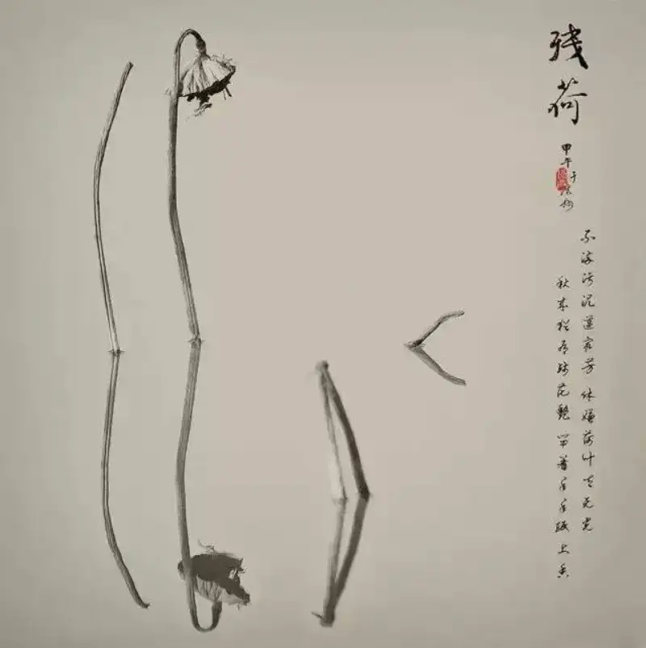
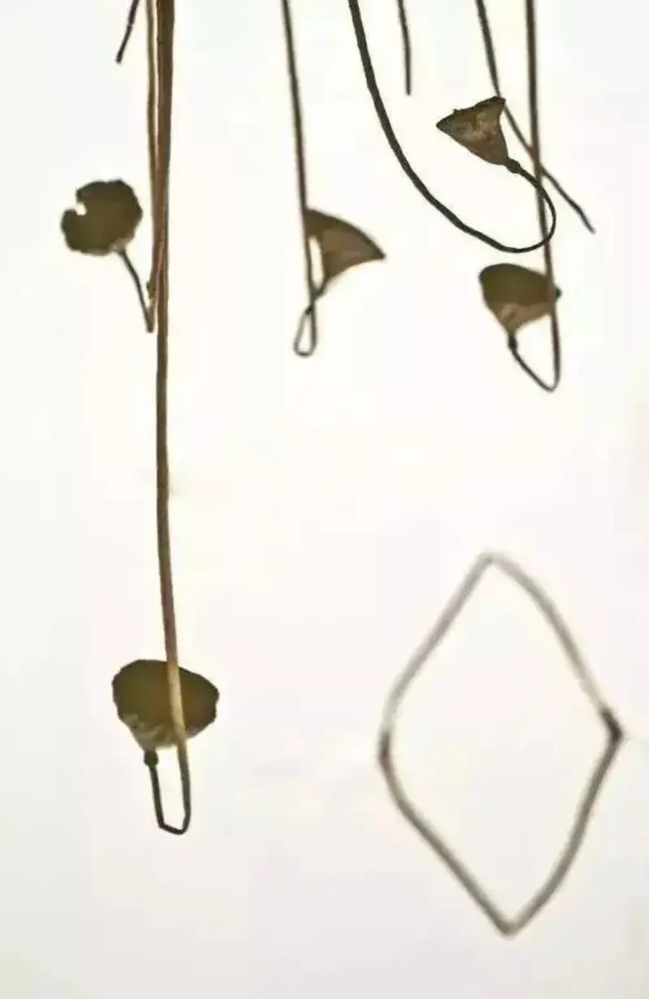
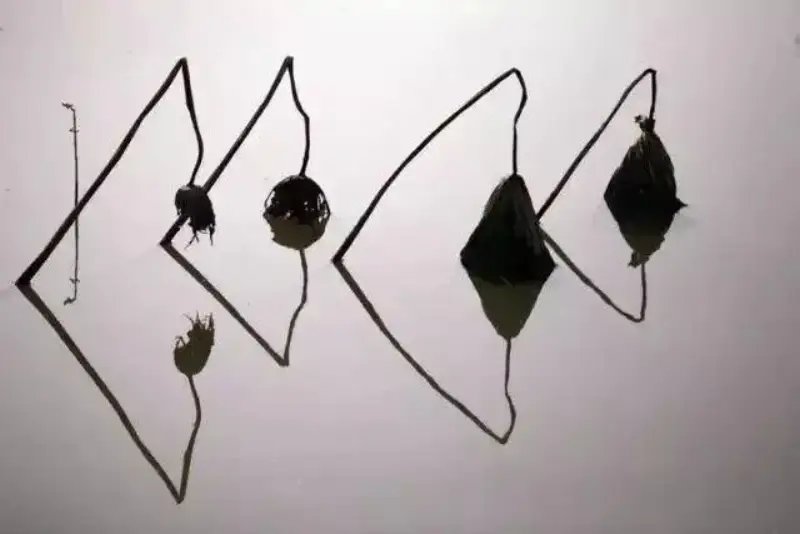
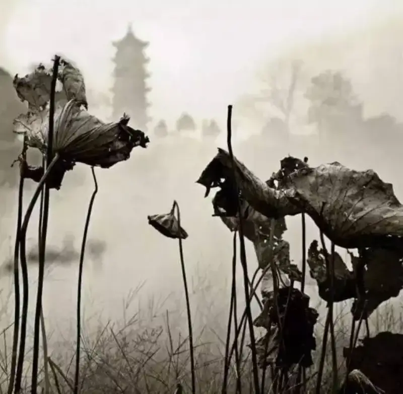

Published: 2022-10-04
Source link: https://www.cnphotos.net/academy/show-97.html
Photography tips: when the lotus in the pond has all withered, it is a good time to shoot the withered lotus. So how do you capture its poetic quality? We explain in detail below.
Why so many people love to shoot withered lotus
Many people do not see what is worth shooting in withered lotus.
The dead branches and fallen leaves look very ugly.
But the people who love it shoot it every year, for months at a time, and never tire of it. That is the gap between those who understand and those who do not.
Withered lotus is a favorite subject of Chinese scholars and poets. Both great poets and painters have made many works on it. After the camera appeared, it naturally became a common subject for photographers as well.
Chinese painting holds one aesthetic principle: the beauty lies between likeness and unlikeness. A work cannot fail to be lifelike, because to draw something that does not look like the thing itself is to deceive the viewer. But you also should not be bound by the outer form of the object. Instead, grasp its inner nature, use your artistic imagination, emphasize or exaggerate, and add your own feeling and thought, so the work shows traits unique to that object.
The dots, lines, and planes, and the empty and solid parts of withered lotus fit this aesthetic principle well. It is also a great subject for practicing the brush in traditional painting.

How do you shoot withered lotus well?
Withered lotus is harder to shoot than a blooming lotus. A blooming lotus is beautiful on its own, and it hides some of your technical flaws.
Withered lotus is different. It is not beautiful on its own. To make it look good, you need real photography skill. We cover a few points below for your reference.
1. Start by subtracting
Photography is about subtraction. How do you subtract? There are many ways. Subtracting in composition and in color really tests your skill when you shoot withered lotus.
In a pond of withered lotus like this, if you do not choose and cut, the frame will be nothing but clutter and will leave no impression.
Use a mid-telephoto lens and shoot only a part. The frame looks much better.

Shift your angle, and you can make it even simpler.
You can also subtract in color and keep only the contrast of black and white. Remove the distraction of extra color, bring out the shapes and lines of the withered lotus, and you gain the feel of a Chinese ink painting.
2. Choose the right time
The time you choose matters. Sunny mornings and evenings are best, and withered lotus is no exception. Shooting at sunrise or before sunset is ideal.
At this time the light is soft. Sunlight on the water echoes the subject and creates dreamy light and shadow, along with silhouettes.
The color and light that sunlight leaves on the water are also part of what you consider in the frame.
The shifts of light and dark on the stems, and the outlines the light makes, are the easiest things for a photographer to spot and control.
3. Different expressions in black and white tone
Withered lotus suits minimal photography. If you want a simple frame with character, try a high-key or a dark-key treatment.
Clean lines against a simple background are a common way to shoot withered lotus.
A dark tone with light and shadow raises the class of your work.
4. The beauty of form: observe patiently
A big reason many people love withered lotus is that its forms vary widely, never stiff, and change endlessly with composition. This requires you to be good at spotting the changes.

A symmetric composition made by the reflection on the water makes the frame interesting.
A clever blend of dots, lines, and planes builds the composition.
The shooting season for withered lotus is long. You can shoot it through almost the whole autumn and winter. At different times, the fading lotus takes different forms.
The withering itself is a kind of beauty. It depends on how you control and read the frame.
5. Pair light and shadow cleverly
Withered lotus is fairly plain on its own. To make something simple look interesting, you need to think a lot about how you use light and shadow.
The light and shadow on the water in the background balance out a plain frame.
The direction of the shadow and the composition need careful thought. Shadows themselves are very interesting in photography.
6. Think: how do you express mood?
For many people, the love of withered lotus is a cultural inheritance. It carries meaning and holds back, with a beauty between likeness and unlikeness. How to express your own idea is hard to say, but there are ways and tricks to shape the mood of the frame.
For example, use the contrast of real and blurred. Soften the main subject to create the mood of a face half-hidden behind a pipa.
Use the reflection in the water to present the lotus, adding a chill and lonely quality that blends the real with the unreal.

Use the real and blurred parts of the background to express a relationship.
In short: if you like shooting withered lotus, use the methods above as a reference, and shoot and practice often.